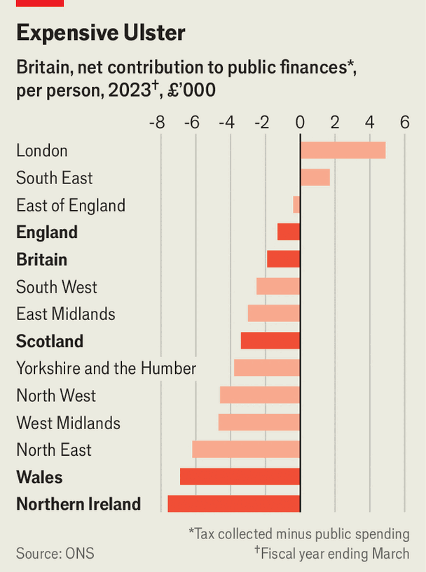

Northern Ireland cannot balance its budget. Nobody cares
The most expensive part of Britain

Sep 17th 2026
In one part of Britain, a government is in effect insolvent. Northern Ireland has become an unwelcome experiment in what happens when fiscal discipline collapses under Britain’s devolved constitution. The Northern Ireland Assembly, which meets at Stormont, has not passed a budget more than five months into the financial year. Politicians do not expect one soon.
The lack of a budget is the latest example of Northern Irish politicians ducking hard fiscal choices. Last year Stormont had a budget but ignored it, overspending by hundreds of millions of pounds. The British government, Stormont’s lender of last resort, understands that the situation is chronic, yet it has played along with the pretence that things are not so bad. It is growing exasperated: Sir Chris Bryant, the government’s Northern Ireland secretary, exhorted local politicians on September 4th to stop “accommodating madness” and find a path to fiscal sustainability.

Northern Ireland is comparatively poor and generously funded by the British government. In 2023 it raised £22bn ($27bn) in revenue, equivalent to 34% of its gdp. Government spending, including directly by Westminster, amounted to £36bn, or 57% of gdp. The deficit per person was £7,600, the highest of any British region or nation (see chart).
Stormont has little incentive to control its spending. Unlike councils in England that have gone bust, local people are not paying the price through higher taxes. If Northern Ireland was a sovereign state and sought to borrow, it would face crippling rates of interest. But as a part of Britain, it does not need to worry about creditworthiness. The Treasury in Westminster borrows on the basis of Britain’s reputation.
The British government’s control of funding is the only real way to discipline Stormont’s spending. But although the government can talk tough, it acts weak. In February it agreed to give Stormont £400m from Britain’s national reserve to patch up its overspend. According to Treasury rules, the reserve is only for “genuinely unforeseen, unaffordable and unavoidable pressures”. Stormont’s woes are as predictable as the plot of a Laurel and Hardy film—but it got the cash.
February’s handout follows the £3.3bn one given in 2024, when devolution was restored after two years without any regional government. The earlier settlement was in essence a reward for failure. It created the moral hazard that if the government collapses, Westminster will step in as a parent might bail out a profligate teen.
The British government is not wholly insane. Its overriding priority is to retain devolution in Belfast. Stormont’s power-sharing government is a key element of the Good Friday Agreement, which in 1998 ended almost three decades of sectarian slaughter. If preserving devolution means periodically tossing in a few hundred million quid, it is better than civil war.
One of the few things that unites Belfast’s disputatious politicians is their insistence that Northern Ireland’s current allocation is not enough. That is hard to defend when Stormont has chosen to create Britain’s most generous free-travel scheme for pensioners, made medical prescriptions free, kept lower university fees and made Northern Ireland the only British region without water charges.
Lavish spending is not matched by superlative outcomes. Stormont spends more per person on health than England or Scotland, yet it has poor outcomes. Waiting times for cancer treatment are long, and in 2023 the share of people waiting for treatment of all kinds was the highest in the uk, at 26%. Bail-outs have helped politicians avoid necessary but unpopular decisions to centralise services—which medics say would save lives.
Stormont’s overspend in 2026-27 is likely to be about £1bn. In theory, this is unsustainable. Yet history does not give reasons for optimism. Soon after Ireland was partitioned in 1921, Northern Ireland’s fledgling government made the first of what Patrick Buckland, a historian, called “repeated begging expeditions”. The British state agreed to a “one-off” grant. Those one-off payments continued in 1923, 1924 and 1925. They have never really stopped.■